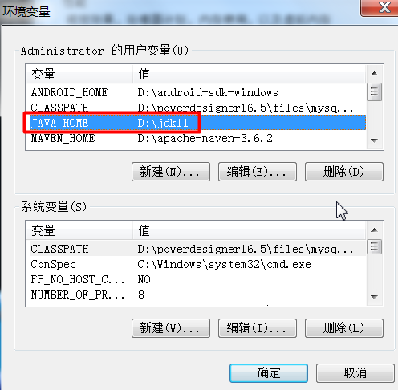
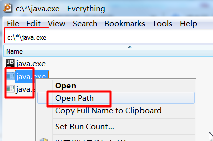
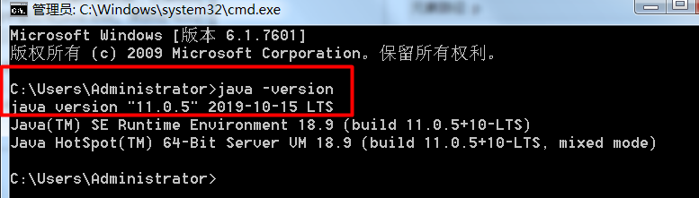
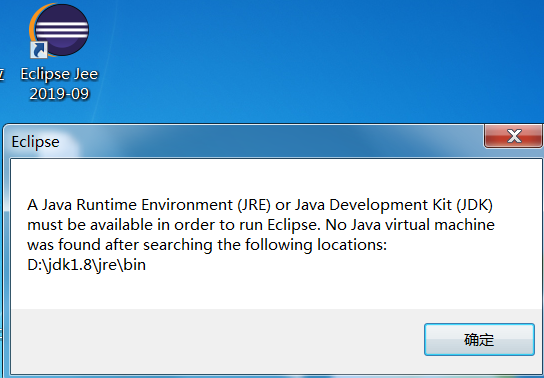
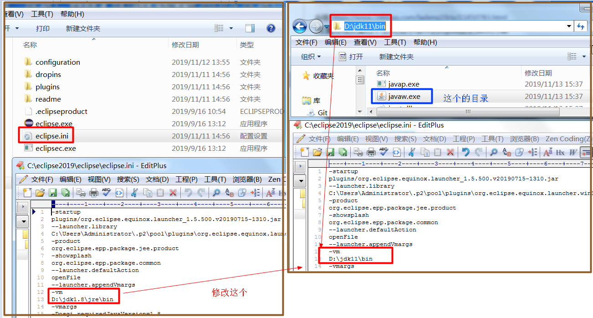

本人一直用jdk1.8版本; 今天安装了jdk11版本, 并配置好了jdk11的环境变量
JAVA_HOME : jdk安装路径bin目录的上级目录
PATH : %JAVA_HOME%\bin;

然后在cmd中 执行 java -version 时显示的是之前安装的jdk1.8的版本
-----------------------------------------------------
解决方案:
1. 安装 everything.exe 这个系统文件全局搜索软件
链接：https://pan.baidu.com/s/1IXB-M9m_HY6O-Zivg25nnQ
提取码：wkr1
2. 全局c盘下的java.exe文件并进入其目录; 把这3个文件都删除掉(如果新安装的jdk在c盘则不删除新安装的, 可以看安装日期删) java.exe、javaw.exe、javaws.exe

--------------------------------------------------------------
删除完后重新打开一个新的cmd窗口,查看版本

------------------------------------
如果启动eclipse报如下错误:

解决方案:

然后启动eclipse能成功则ok